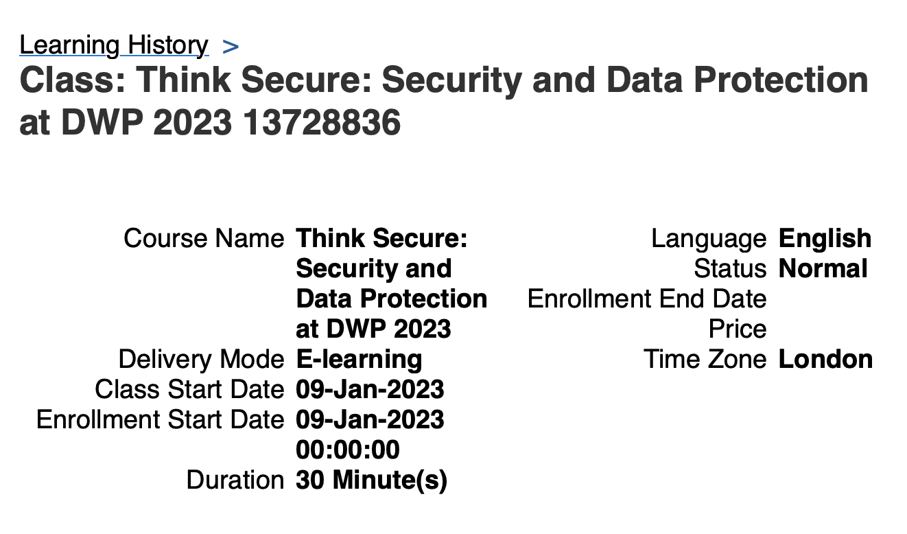
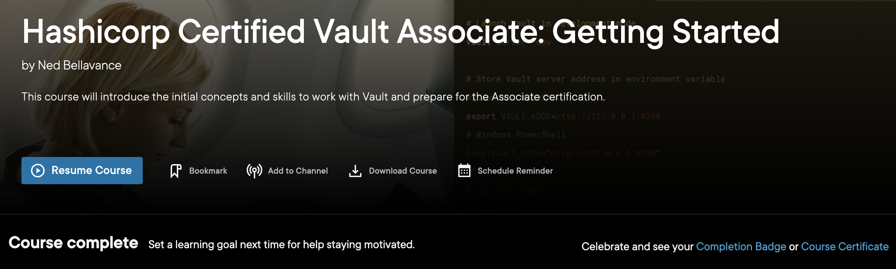
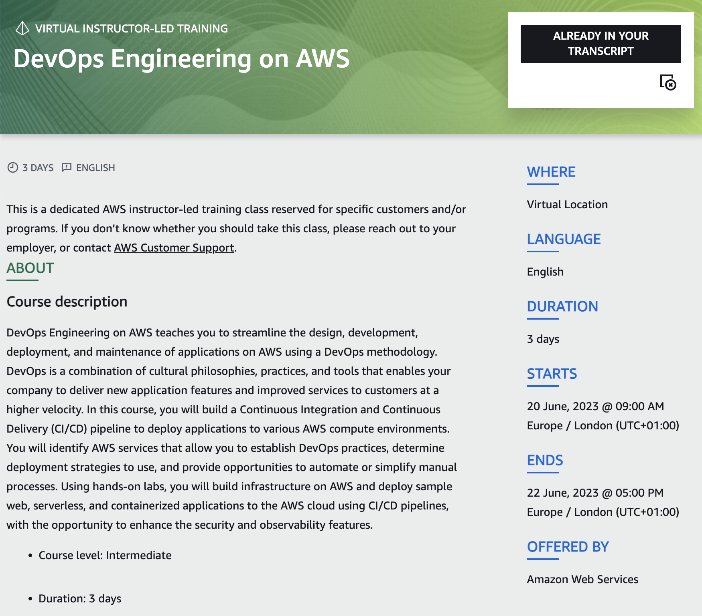
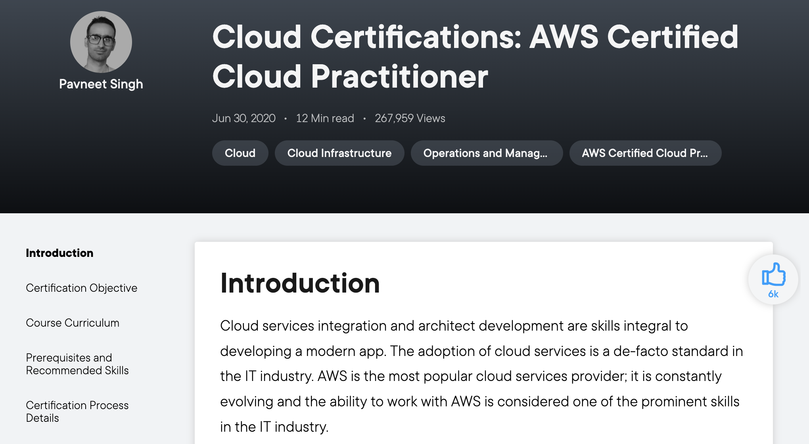

Introduction
Date: 21 March 23
Introduction
I believe that continuous learning is very important in this role. Alongside training required by the Civil Service (e.g. health and safety, regualatory training). I also have taken several training courses as well as availed myself of online training courses that I have access to as part of my job.
DWP training completed
As can be seen below I have completed a course in data protection (Think Secure: Security and Data Protection at DWP) mandated by DWP. This course required me to learn and acquaint myself with data protection law and what my responsibilities were in this domain. This was a particularly important training course as we deal and could get access to a great amount of data. (K22).

Self lead learning
The course below is one I completed. It covered the basics of setting up a vault cluster as well as the basic commands and use cases for the software. S16 B2. This has been useful in my day to day role as the member of our team most proficient in vault has recently been promoted so there is a lack of Vault knowledge on the team.

I also use Pluralsight to maintain and awareness and prepare for certification. The cloud practioner is the first AWS certificate that a person should do since it lays a foundation for all the others that follow, as I was told when on a course for DevOps engineering on the AWS platform. K25

which acts as preperation for this:
